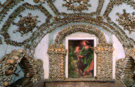
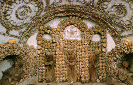
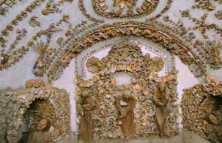
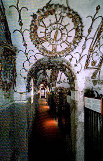
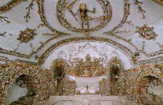
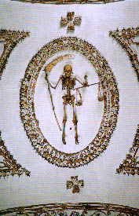
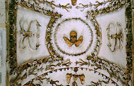

SANTA MARIA IMMACOLATA
CONCEZIONE/ROMA
骸骨寺/ローマ
全ての道が続くローマである。
ローマの中央駅からも歩いて行けるベネト通りは高級ブティックが並ぶお買い物のメッカである。
そのベネト通りに地味〜な外観の教会がある。
それが1626年に建てられた骸骨寺とよばれる教会である。
ここが何故骸骨寺と呼ばれるのか、写真を見ていただければ一目瞭然だろう。

コレ、ぜ〜んぶ人骨で出来ているのだ。
壁の祭壇飾りは勿論、天井のアーチ飾りまですべて人骨で飾られているのだ。
 
しかも、装飾の方法が頭蓋骨なら頭蓋骨ばっかり、骨盤なら骨盤ばかりを集めてつくるという徹底っぷり。おそれいります。
それらの骸骨装飾に囲まれて寝たり立ってたりするのはカプチン僧のミイラ。これなら寂しくないでしょう。

こちらは骨盤の間。
こういうところはお医者さんとか骨に詳しい人と来ると面白いかもね。
頭蓋骨と背骨と骨盤位は判るけど細かい骨はどこの部分だか全く判らない。
そんな小骨（魚みたいか）さえもパーツ別に分類されているのだ。
あ、ちなみにここ、撮禁なので写真全部絵葉書の転載だす。

内部は片廊下で骸骨ルームの逆側は窓。外にはフツ〜の日常の風景が。そのアンバランス具合がたまらん。
天井にはもっちろん骨製のシャンデリア。
 
骸骨部屋は全部で5つ。中でも圧巻だったのはこちらの部屋。
天井の骸骨が持っている鎌までもが骨で出来ている。

で、見終わって何がしかの感想を述べようと思ったのだが、西洋の生死感とか語れる程キリスト教の知識なんぞほとんどなく、ましてやここの宗派であるカプチン会の教義など知る筈もない私にはただただビックリという他ない。
それとおどろおどろしいモノを想像していたけど、結構綺麗でした・・・
結論としてあるテーマ性をもった装飾は面白いといったトコでしょうか。
こんな感想じゃあシャンデリアとかになっちゃった人も浮かばれないだろうなあ。
次はパスタです
珍寺大道場in伊太利
珍寺大道場 HOME